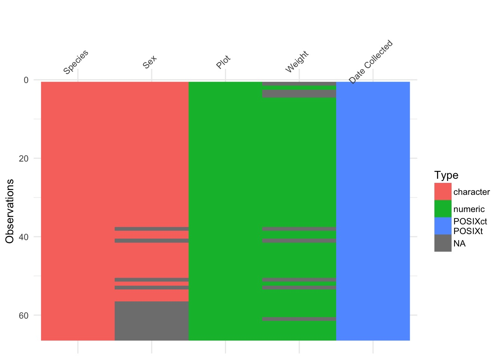

Wrangling and Cleaning Strings Parte Deux

Just Another Day Loading Data…
The Nigtmare Scenario

What to Do?
- Deal with NA Values
- na handlers and filter
Diagnose remaining problems
- Remove unneeded characters
- string matching
- Basic regular expressions
- string matching
- Remove errant line spaces and other cruft
- More advanced regular expressions
Fix names
Detecting Problems
str_subset()returns your matches- Analagous to
grep()
- Analagous to
str_detect()gives you TRUE or FALSE for matches- Analagous to
grepl()for those who have used it before
- Analagous to
Words with 3 Consonants at the beginning
[1] "Christ" "Christmas" "dry" "fly" "mrs"
[6] "scheme" "school" "straight" "strategy" "street"
[11] "strike" "strong" "structure" "system" "three"
[16] "through" "throw" "try" "type" "why" Words with the letter r and q
- Tricky because order cannot matter
- BUT - we can match sequentially
- Pipes work here!
[1] "quarter" "require" "square" Weaponizing str_detect with filter()
library(dplyr)
#extract anything without a male or female sex
filter(portal, str_detect(Sex, "[fmFM]"))# A tibble: 52 x 5
Species `Date Collected` Plot Sex Weight
<chr> <dttm> <chr> <chr> <chr>
1 DM 2013-07-16 00:00:00 2 F <NA>
2 DM 2013-07-16 00:00:00 7 M 33g
3 DM 2013-07-16 00:00:00 3 M <NA>
4 DM 2013-07-16 00:00:00 1 M <NA>
5 DM 2013-07-18 00:00:00 3 M 40g
6 DM 2013-07-18 00:00:00 7 M 48g
7 DM 2013-07-18 00:00:00 4 F 29g
8 DM 2013-07-18 00:00:00 4 F 46g
9 DM 2013-07-18 00:00:00 7 M 36g
10 DM 2013-07-18 00:00:00 7 F 35g
# ... with 42 more rowsExercises
Find all
stringr::wordsthat start or end with x.How many words start with a vowel and end with a consonant.
Are there any words that contain at least one of each different vowel?
Solutions
[1] "box" "sex" "six" "tax"Solutions
# How many words start with a vowel and end with a consonant?
vow_cons <- str_detect(words, "^[aeiou].*[^aeiou]$")
sum(vow_cons)[1] 122Solutions
# Words that contain one of each vowel
str_subset(words, "a") %>%
str_subset("i") %>%
str_subset("o") %>%
str_subset("u")[1] "authority" "various" Exercise
Which Weights are bad?
[1] "33g" "40g"
[3] "48g" "29g"
[5] "46g" "36g"
[7] "35g" "22g"
[9] "42g" "41g"
[11] "37g" "132 (scale not calibrated)"
[13] "113 (scale not callibtrated)"Finding and filtering is all well and good…
We want to change values
- Many helper functions for standard changes
- e.g.
str_to_lower()
- e.g.
- Or use
str_replace()andstr_replace_all- like
gsub()in base R
- like
Easy fixes that work with mutate
Uppercase
[1] "THE BIRCH CANOE SLID ON THE SMOOTH PLANKS."
[2] "GLUE THE SHEET TO THE DARK BLUE BACKGROUND."
[3] "IT'S EASY TO TELL THE DEPTH OF A WELL."
[4] "THESE DAYS A CHICKEN LEG IS A RARE DISH." Easy fixes that work with mutate
Lowercase
[1] "the birch canoe slid on the smooth planks."
[2] "glue the sheet to the dark blue background."
[3] "it's easy to tell the depth of a well."
[4] "these days a chicken leg is a rare dish." Easy fixes that work with mutate
Title
[1] "The Birch Canoe Slid On The Smooth Planks."
[2] "Glue The Sheet To The Dark Blue Background."
[3] "It's Easy To Tell The Depth Of A Well."
[4] "These Days A Chicken Leg Is A Rare Dish." str_replace: more generic replacements
Remove first vowel from words
[1] "" "ble" "bout" "bsolute" "ccept" "ccount" "chieve"
[8] "cross" "ct" "ctive" str_replace_all: the big fix
Remove first vowel from words
[1] "" "bl" "bt" "bslt" "ccpt" "ccnt" "chv" "crss" "ct" "ctv" Moving Pieces
abc -> cab
[1] "The birch canoe slid on the smooth planks."[1] "The smooth canoe slid on the birch planks."Exercises
Replace the word “the” or “The” with “Cat” in stringr::sentences
Switch the first and last letters in words. Bonus: Use
intersectto find out which of those strings are still words?Use
mutateto remove g and the other cruft from weights and then make numeric
Solutions
#Replace the word "the" with "cat" in stringr::sentences
str_replace_all(sentences, "[tT]he", "cat")[1:10] [1] "cat birch canoe slid on cat smooth planks."
[2] "Glue cat sheet to cat dark blue background."
[3] "It's easy to tell cat depth of a well."
[4] "catse days a chicken leg is a rare dish."
[5] "Rice is often served in round bowls."
[6] "cat juice of lemons makes fine punch."
[7] "cat box was thrown beside cat parked truck."
[8] "cat hogs were fed chopped corn and garbage."
[9] "Four hours of steady work faced us."
[10] "Large size in stockings is hard to sell." Solutions
Solutions
[1] "a" "america" "area" "dad" "dead"
[6] "deal" "dear" "depend" "dog" "educate"
[11] "else" "encourage" "engine" "europe" "evidence"
[16] "example" "excuse" "exercise" "expense" "experience"
[21] "eye" "god" "health" "high" "knock"
[26] "lead" "level" "local" "nation" "no"
[31] "non" "on" "rather" "read" "refer"
[36] "remember" "serious" "stairs" "test" "tonight"
[41] "transport" "treat" "trust" "window" "yesterday" Editing our data
Did it work?
character(0) [1] NA "33" "40" "48" "29" "46" "36" "35" "22" "42" "41"
[12] "37" "52" "50" "31" "44" "39" "45" "117" "121" "115" "120"
[23] "118" "126" "132" "113" "122" "107" "38" "43" "7" "157" "218"
[34] "128"There is no shame in many mutates
\s = whitespace
Did it work?
character(0)Now fix the data
Let’s see it!

Fix plot
Is it really a string?
Make any needed fixes (if any!)
Make it numeric
Solution
character(0)Almost there

What to Do?
- Deal with NA Values
- na handlers and filter
Diagnose remaining problems
- Remove unneeded characters
- string matching
- Basic regular expressions
- string matching
- Remove errant line spaces and other cruft
- More advanced regular expressions
Fix names
The problems with species
[1] "DM" "DO" "ds" "NA" "OL" "PE" "PF" "OT" "DS" "OX"
[11] "DM_F" "DS_F" "DM_M" "DO_M" "OL_M"Some Initial Fixes
- Capitalize!
- Make NA NA
[1] "DM" "DO" "DS" NA "OL" "PE" "PF" "OT" "OX" "DM_F"
[11] "DS_F" "DM_M" "DO_M" "OL_M"But what about those Species_Sex combos?
str_split()makes splitsstr_c()combines
Combining
This is the one of the most common things I do:
- Variable names
- Combining different columns
- Adding units
[1] "a,b,c"Adding to a Vector
[1] NA "33g" NA NA "40g" "48g" "29g" "46g" "36g" "35g"
[11] "22g" "42g" "41g" "37g" "52g" "33g" "50g" "48g" "31g" "41g"
[21] "44g" "48g" "39g" "40g" "45g" "41g" "117g" "121g" "115g" "120g"
[31] "118g" "126g" "132g" "113g" "122g" "107g" "115g" NA "44g" "38g"
[41] NA "22g" "38g" "48g" "43g" "35g" "43g" "37g" "7g" "45g"
[51] NA "157g" NA "218g" "7g" "52g" "37g" "128g" "42g" "37g"
[61] NA "48g" "45g" "42g" "52g" "35g" Collapsing a Vector
[1] "a" "b" "c"[1] "a,b,c"Collapsing a Vector
[1] "33g, 40g, 48g, 29g, 46g, 36g, 35g, 22g, 42g, 41g, 37g, 52g, 33g, 50g, 48g, 31g, 41g, 44g, 48g, 39g, 40g, 45g, 41g, 117g, 121g, 115g, 120g, 118g, 126g, 132g, 113g, 122g, 107g, 115g, 44g, 38g, 22g, 38g, 48g, 43g, 35g, 43g, 37g, 7g, 45g, 157g, 218g, 7g, 52g, 37g, 128g, 42g, 37g, 48g, 45g, 42g, 52g, 35g"Splitting Strings
That “DM_F” problem!
[[1]]
[1] "hello" "goodbye"
[[2]]
[1] "purple" "orange"- Can use any regexp for the pattern
- Can recombine results as needed
Splitting Strings Simply
That “DM_F” problem!
[,1] [,2]
[1,] "hello" "goodbye"
[2,] "purple" "orange" Modifying our data
Split out sex from species and put it in its own column
Fix Species
Add new entries where needed to Sex
Clean up (and make it real)
Modifying our data
- Split out sex from species and put it in its own column
Did it work?
[1] "" "" "" "" "" "" "" "" "" "" "" "" "" "" "" "" ""
[18] "" "" "" "" "" "" "" "" "" "" "" "" "" "" "" "" ""
[35] "" "" "" "" "" "" "" "" "" "" "" "" "" "" "" "" ""
[52] "" "" "" "" "" "F" "F" "F" "M" "M" "F" "M" "F" "M" "M"Modifying Our data
- Fix Species
portal_test <- portal %>%
mutate(Split_Sex = str_split(Species,
pattern="_",
simplify=TRUE)[,2],
Species = str_split(Species,
pattern="_",
simplify=TRUE)[,1])Other options here?
Did it work?
[1] "DM" "DO" "DS" NA "OL" "PE" "PF" "OT" "OX"Modifying Our data
- Add new entries where needed to Sex
Did it work?
[1] "F" "M" "M" "M" "M" "M" "F" "F" "M" "F" "f" "f" "F" "F" "F" "F" "F"
[18] "F" "F" "F" "F" "m" "F" "F" "M" "F" "F" "F" "M" "F" "F" "F" "m" "F"
[35] "F" "F" "F" NA "M" "M" NA "M" "M" "M" "M" "F" "M" "F" "F" "M" NA
[52] "M" NA "M" "F" "M" "F" "F" "F" "M" "M" "F" "M" "F" "M" "M"Modifying Our data
- Clean up (and make it real)
Exercises
Combine words separating them by “-” into one long string.
Split up a string like “apples, pears, and bananas” into individual words with no spacing around them. Use
as.vector()andstr_detectto make it into a seamless vector with no “”.What does splitting with an empty string (“”) do? Experiment, and then read the documentation.
Solutions
- Combine words separating them by “-” into one long string.
[1] "a-able-about-absolute-accept-account-achieve-across-act-active-actual-add-address-admit-advertise-affect-afford-after-afternoon-again-against-age-agent-ago-agree-air-all-allow-almost-along-already-alright-also-although-always-america-amount-and-another-answer-any-apart-apparent-appear-apply-appoint-approach-appropriate-area-argue-arm-around-arrange-art-as-ask-associate-assume-at-attend-authority-available-aware-away-awful-baby-back-bad-bag-balance-ball-bank-bar-base-basis-be-bear-beat-beauty-because-become-bed-before-begin-behind-believe-benefit-best-bet-between-big-bill-birth-bit-black-bloke-blood-blow-blue-board-boat-body-book-both-bother-bottle-bottom-box-boy-break-brief-brilliant-bring-britain-brother-budget-build-bus-business-busy-but-buy-by-cake-call-can-car-card-care-carry-case-cat-catch-cause-cent-centre-certain-chair-chairman-chance-change-chap-character-charge-cheap-check-child-choice-choose-Christ-Christmas-church-city-claim-class-clean-clear-client-clock-close-closes-clothe-club-coffee-cold-colleague-collect-college-colour-come-comment-commit-committee-common-community-company-compare-complete-compute-concern-condition-confer-consider-consult-contact-continue-contract-control-converse-cook-copy-corner-correct-cost-could-council-count-country-county-couple-course-court-cover-create-cross-cup-current-cut-dad-danger-date-day-dead-deal-dear-debate-decide-decision-deep-definite-degree-department-depend-describe-design-detail-develop-die-difference-difficult-dinner-direct-discuss-district-divide-do-doctor-document-dog-door-double-doubt-down-draw-dress-drink-drive-drop-dry-due-during-each-early-east-easy-eat-economy-educate-effect-egg-eight-either-elect-electric-eleven-else-employ-encourage-end-engine-english-enjoy-enough-enter-environment-equal-especial-europe-even-evening-ever-every-evidence-exact-example-except-excuse-exercise-exist-expect-expense-experience-explain-express-extra-eye-face-fact-fair-fall-family-far-farm-fast-father-favour-feed-feel-few-field-fight-figure-file-fill-film-final-finance-find-fine-finish-fire-first-fish-fit-five-flat-floor-fly-follow-food-foot-for-force-forget-form-fortune-forward-four-france-free-friday-friend-from-front-full-fun-function-fund-further-future-game-garden-gas-general-germany-get-girl-give-glass-go-god-good-goodbye-govern-grand-grant-great-green-ground-group-grow-guess-guy-hair-half-hall-hand-hang-happen-happy-hard-hate-have-he-head-health-hear-heart-heat-heavy-hell-help-here-high-history-hit-hold-holiday-home-honest-hope-horse-hospital-hot-hour-house-how-however-hullo-hundred-husband-idea-identify-if-imagine-important-improve-in-include-income-increase-indeed-individual-industry-inform-inside-instead-insure-interest-into-introduce-invest-involve-issue-it-item-jesus-job-join-judge-jump-just-keep-key-kid-kill-kind-king-kitchen-knock-know-labour-lad-lady-land-language-large-last-late-laugh-law-lay-lead-learn-leave-left-leg-less-let-letter-level-lie-life-light-like-likely-limit-line-link-list-listen-little-live-load-local-lock-london-long-look-lord-lose-lot-love-low-luck-lunch-machine-main-major-make-man-manage-many-mark-market-marry-match-matter-may-maybe-mean-meaning-measure-meet-member-mention-middle-might-mile-milk-million-mind-minister-minus-minute-miss-mister-moment-monday-money-month-more-morning-most-mother-motion-move-mrs-much-music-must-name-nation-nature-near-necessary-need-never-new-news-next-nice-night-nine-no-non-none-normal-north-not-note-notice-now-number-obvious-occasion-odd-of-off-offer-office-often-okay-old-on-once-one-only-open-operate-opportunity-oppose-or-order-organize-original-other-otherwise-ought-out-over-own-pack-page-paint-pair-paper-paragraph-pardon-parent-park-part-particular-party-pass-past-pay-pence-pension-people-per-percent-perfect-perhaps-period-person-photograph-pick-picture-piece-place-plan-play-please-plus-point-police-policy-politic-poor-position-positive-possible-post-pound-power-practise-prepare-present-press-pressure-presume-pretty-previous-price-print-private-probable-problem-proceed-process-produce-product-programme-project-proper-propose-protect-provide-public-pull-purpose-push-put-quality-quarter-question-quick-quid-quiet-quite-radio-rail-raise-range-rate-rather-read-ready-real-realise-really-reason-receive-recent-reckon-recognize-recommend-record-red-reduce-refer-regard-region-relation-remember-report-represent-require-research-resource-respect-responsible-rest-result-return-rid-right-ring-rise-road-role-roll-room-round-rule-run-safe-sale-same-saturday-save-say-scheme-school-science-score-scotland-seat-second-secretary-section-secure-see-seem-self-sell-send-sense-separate-serious-serve-service-set-settle-seven-sex-shall-share-she-sheet-shoe-shoot-shop-short-should-show-shut-sick-side-sign-similar-simple-since-sing-single-sir-sister-sit-site-situate-six-size-sleep-slight-slow-small-smoke-so-social-society-some-son-soon-sorry-sort-sound-south-space-speak-special-specific-speed-spell-spend-square-staff-stage-stairs-stand-standard-start-state-station-stay-step-stick-still-stop-story-straight-strategy-street-strike-strong-structure-student-study-stuff-stupid-subject-succeed-such-sudden-suggest-suit-summer-sun-sunday-supply-support-suppose-sure-surprise-switch-system-table-take-talk-tape-tax-tea-teach-team-telephone-television-tell-ten-tend-term-terrible-test-than-thank-the-then-there-therefore-they-thing-think-thirteen-thirty-this-thou-though-thousand-three-through-throw-thursday-tie-time-to-today-together-tomorrow-tonight-too-top-total-touch-toward-town-trade-traffic-train-transport-travel-treat-tree-trouble-true-trust-try-tuesday-turn-twelve-twenty-two-type-under-understand-union-unit-unite-university-unless-until-up-upon-use-usual-value-various-very-video-view-village-visit-vote-wage-wait-walk-wall-want-war-warm-wash-waste-watch-water-way-we-wear-wednesday-wee-week-weigh-welcome-well-west-what-when-where-whether-which-while-white-who-whole-why-wide-wife-will-win-wind-window-wish-with-within-without-woman-wonder-wood-word-work-world-worry-worse-worth-would-write-wrong-year-yes-yesterday-yet-you-young"Solutions
- Split up a string like “apples, pears, and bananas” into individual words
vec <- str_split("apples, pears, and bananas", pattern = ",", simplify=TRUE) %>%
str_split(pattern = " ", simplify=TRUE) %>%
as.vector
vec[str_detect(vec, "[a-z]")][1] "apples" "pears" "and" "bananas"